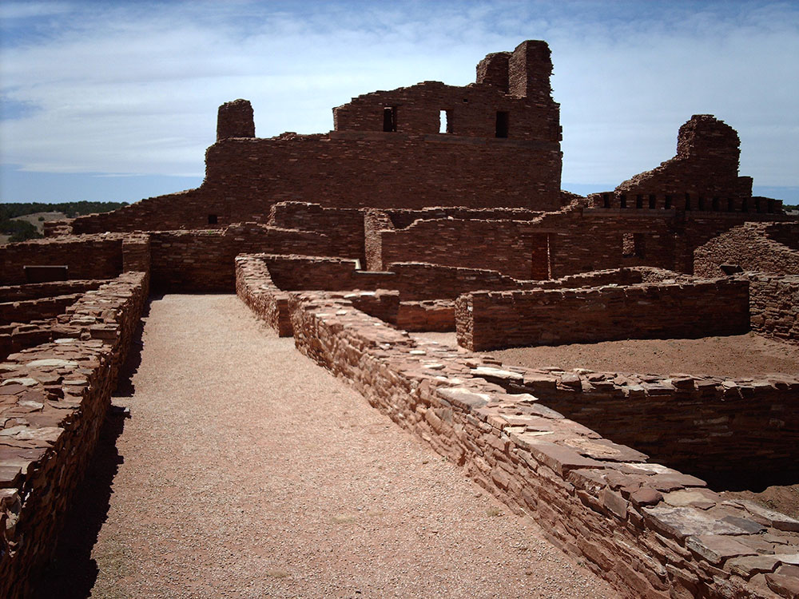
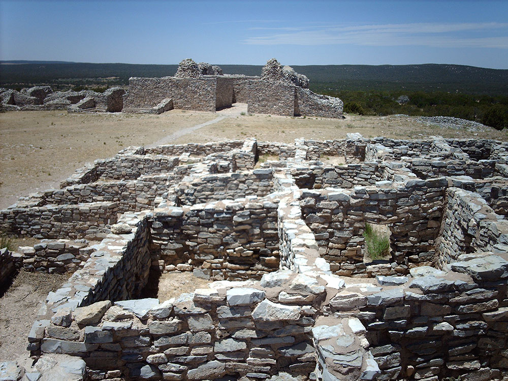
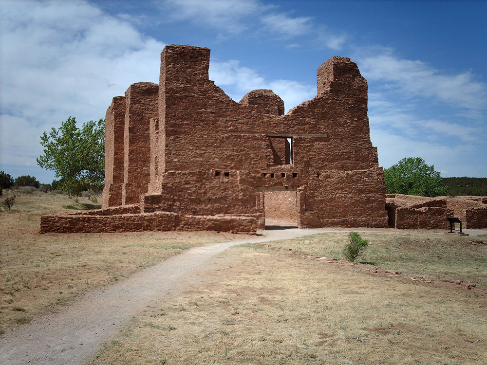

Complex of three Spanish missions located in New Mexico, where construction of the missions began in 1622 and was completed in 1635
General Information
Winter (Nov–Mar): 9am to 4pm
Closed Thanksgiving Day, Christmas Day, and New Year’s Day
How to Get There
From Albuquerque (70 mi): Take I‑25 south to Belen, then NM‑47 to US‑60 east; follow US‑60 about 21 miles to Mountainair and the monument headquarters.
Overview
Salinas Pueblo Missions National Monument preserves the ruins of three of the earliest Spanish missions in the Southwest and the pueblos beside them: Quarai, Abó and Gran Quivira. In the 1600s the Salinas Valley was a bustling crossroads where Pueblo peoples, Spanish missionaries and colonists met and traded salt and goods, before drought, famine, disease and Apache raids led to the abandonment of the area by the 1670s. The monument combines the three separate sites with the Mountainair visitor center. It was created in 1980, building on the earlier protection of Gran Quivira as a national monument in 1909, and the three units also preserve the stories of the Tompiro and Tiwa-speaking Pueblo peoples. Visitors come to walk through towering mission walls, ancient kivas and village mounds in quiet, uncrowded high desert settings.
Access
The monument is in the Estancia Valley near the town of Mountainair, about 70 to 80 miles southeast of Albuquerque. The units are spread out, and visitors normally drive between them: Quarai is about 8 miles north of Mountainair, Abó is about 9 miles west and Gran Quivira about 25 miles south. Most roads are paved, with Quarai and Abó accessed from NM-55 and US-60, and Gran Quivira from NM-55. The sites are often visited together as a loop or scenic drive, and a full tour of all three takes most of a day.
Seasons
The monument is open year-round, with spring and fall the most pleasant for walking among the ruins at roughly 6,000 feet of elevation. Summer days can be hot, followed by afternoon thunderstorms, so the early morning is best. Winters are cold with occasional snow and ice, and the sites are especially quiet then. Hours at the individual units are shorter in winter than in summer, and the monument is closed on Thanksgiving, Christmas and New Year's Day.
Things to Do
Visit Three Missions in One Monument
Salinas Pueblo Missions National Monument offers a rare chance to compare three well-preserved 17th-century mission complexes in a single trip. Each unit has its own character and landscape, and together they tell the story of the Salinas Valley.
Explore Quarai
Quarai, in a shady cottonwood setting, features the soaring red sandstone walls of the Nuestra Señora de la Purísima Concepción church, among the most complete mission ruins in the Southwest. A short loop passes the church, the convento and a restored kiva.
Walk Through Abó
At Abó, the large San Gregorio de Abó mission church stands beside the excavated pueblo, with kivas and a convento that shows how the Spanish and Pueblo cultures lived side by side.
See Gran Quivira (Las Humanas)
The most remote unit has the largest pueblo, with more than 300 rooms, plus two mission churches and 18 kivas. Gran Quivira has a visitor center and museum, and the surrounding views stretch across the Estancia Basin.
Stop at the Mountainair Visitor Center
The headquarters in Mountainair has exhibits and a film that introduce the history of the missions and the pueblos. It is the best place to start and to check on conditions at the individual units.
Top Trails
Quarai Ruins Trail
Length: Approximately 0.5 miles loop
Elevation Gain: Minimal
Difficulty: Easy
This short, shaded walk circles the mission church and convento and passes the pueblo mounds and a restored kiva.
Abó Ruins Trail
Length: Approximately 0.5 miles loop
Elevation Gain: Minimal
Difficulty: Easy
This trail leads past the mission church and convento and the excavated pueblo, giving a feel for how the mission and village fit together.
Gran Quivira Mission and Pueblo Trail
Length: Approximately 0.75 miles loop
Elevation Gain: Minimal
Difficulty: Easy
This loop winds through the large pueblo ruins and two mission churches, with interpretive signs and long views across the valley.
Visitor Centers
The Salinas Pueblo Missions Visitor Center in Mountainair, on Ripley Avenue, is the park headquarters and the best place to learn about the three missions before heading out. It has exhibits, a film, a bookstore and restrooms, and rangers who can advise on hours and conditions at the other units. Gran Quivira has its own visitor center and museum, while Quarai and Abó have small contact stations with restrooms and information. Admission is free, and hours vary by season, so check the National Park Service website.
Camping and Lodging
There is no camping or lodging within the monument. Mountainair has a few small motels and the historic Shaffer Hotel, with restaurants and shops along US-60, and additional hotels are in Moriarty and Belen, about 45 minutes to an hour away. Albuquerque, about 1.25 hours away, has the widest selection of lodging. Camping is available at Manzano Mountains State Park and at Cibola National Forest campgrounds in the Manzano Mountains, close to Mountainair. Check each property's website for current availability.
This article uses material from the Wikipedia article and official pages for Salinas Pueblo Missions National Monument, Travel.com Guide, Visit Albuquerque, National Parks Data, Britannica, released under the Creative Commons Attribution-Share-Alike License 3.0. Additional information from the National Park Service.
Featured Trails
#Placeholder, #License, via Wikimedia Commons; Image Size Adjusted
Gran Quivira Mission Trail
Difficulty: Easy
Short interpretive trail through the largest mission site featuring pueblo ruins, kivas, and historic churches
#Placeholder, #License, via Wikimedia Commons; Image Size Adjusted
Quarai Ruins Trail
Difficulty: Easy
Scenic loop through well-preserved mission ruins set among trees with views of surrounding mountains
#Placeholder, #License, via Wikimedia Commons; Image Size Adjusted
Abó Mission Trail
Difficulty: Easy
Easy interpretive walk around striking red sandstone ruins and historic pueblo structures
#Placeholder, #License, via Wikimedia Commons; Image Size Adjusted
Spanish Corral Trail
Difficulty: Easy
Loop trail near Quarai passing through piñon-juniper forest and historic landscape features




